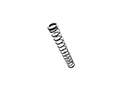
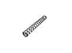

Микро пружины
Изготовление микро пружин на заказ партиями от 1-й штуки от 1-го дня.
Выполним по разнообразным параметрам, чертежам или образцу, фото, эскизам.
(сроки выполнения заказа обговариваются с каждым клиентом индивидуально)
- 
- 
Изготовление и производство микро пружин
“Индустриал Спрингс” изготавливает микро пружины из проволоки от 0,1 мм. Микро пружины применяются во многих сферах, в медицине и приборостроении, в различных узлах и механизмах, каждый мог видеть их использование в шариковых ручках. Отличительной особенностью микро пружин является их маленький размер и как следствие трудоемкая технологическая цепочка при их изготовлении, испытании и контроле. Наше предприятие имеет адаптированное профессиональное оборудование для изготовления микро пружин. В изготовлении используются высококачественные пружинные сплавы и стали (углеродистые, легированные, специальные теплостойкие и нержавеющие).
Микро пружины можно заказать и купить у нас крупными и мелкооптовыми партиями с доставкой по всей территории Украины. При оформлении заявки на расчет и изготовление микро пружин необходимо проконсультироваться с нашими специалистами, для точного составления технического задания к Вашему заказу, где будут учтены все необходимые параметры: диаметр и высота пружин, диаметр проволоки, а также материал и количество полных витков. Для заказа свяжитесь с мененджером нашей компании через форму заявки или по одному из телефонов: 066 283 80 82, 097 305 81 85, 0532 591 590.